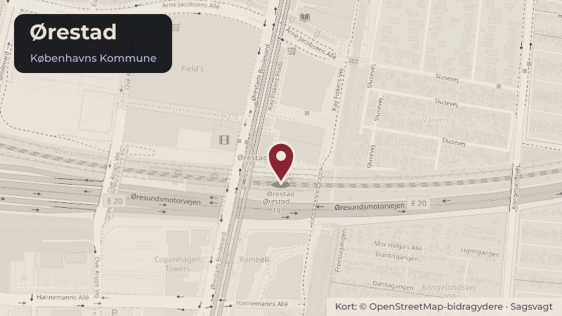

Behandlet 24. november, Amager Vest Lokaludvalg
Orientering: Naboorientering opførsel af 3 midlertidige daginstitutioner i 3 etager, legeplads, støjskærme i Ørestad

Kort fortalt
- Hvem
- Amager Vest Lokaludvalg
- Hvornår
- Tirsdag 24. november 2026
- Status
- Behandlet. Referatet med beslutningen er ikke offentliggjort endnu.
Er noget forkert her? Skriv til os
Læs hele sagen Kommunens egen tekst
Indstilling
Formanden for Amager Vest Lokaludvalg indstiller, at lokaludvalget tager orienteringen til efterretning på baggrund af indstilling fra børn og unge gruppen og godkendelse i forretningsudvalget.
Problemstilling
Svar på naboorientering
Lokaludvalget har modtaget en naboorientering fra Klima- Miljø- og Teknikforvaltnigen vedr. opførsel af 3 midlertidige daginstitutioner i 3 etager, legeplads, støjskærme i Ørestad.
Lokaludvalgets svar på naboorienteringen er sendt til forvaltningen.
Arbejdsgruppen Børn & Unge har behandlet naboorienteringen og formuleret et udkast til svar, som er godkendt af Forretningsudvalget, da fristen for svar lå før lokaludvalgsmødet.
Svaret fremgår herunder:
"Lokaludvalget anerkender, at der på nuværende tidspunkt er behov for flere daginstitutionspladser i hele Ørestad, men sætter spørgsmålstegn ved, om den foreslåede placering er den mest hensigtsmæssige.
Lokaludvalget er særligt bekymret for udfordringer med støj og luftforurening fra den nærliggende motorvej og jernbane, da institutionerne placeres i et område med et højt støjniveau, jf. vedlagte grafik over støjmålinger.
På baggrund af lokaludvalgets tidligere arbejde med eksempelvis ’Store skoler på små grunde’ og lokalplanen for daginstitutionen på Ørestad Boulevard/Otto Baches Allé i Ørestad Syd vil lokaludvalget desuden opfordre til, at daginstitutionens udendørsarealer ikke placeres på tag, men på terræn af hensyn til børnenes udfoldelsesmuligheder og risikoen for vind.
Lokaludvalget opfordrer desuden til, at der sikres gode og trygge adgangs- og afleveringsforhold ved institutionerne, så hverdagen fungerer smidigt for områdets børnefamilier med tilstrækkelig plads til både ladcykler og kortvarig bilstandsning.
Lokaludvalget finder det afgørende, at der sættes en klar og forpligtende tidshorisont for de midlertidige pavilloner, og at forvaltningen sideløbende fremlægger en plan for, hvornår de permanente pladser står klar til at overtage.
Grafik: Støjniveau ved den foreslåede placering. Kilde: Sund & Bælt veje."
Baggrund
Lokaludvalget har modtaget en naboorientering om opførelse af 3 daginstitutioner i 3 etager med legeplads og støjskærme på Arne Jacobsens Allé 6G i Ørestad.
Projektet omfatter tre ens pavillonbygninger i tre etager med et samlet etageareal på 3.177 m². Institutionerne skal have plads til ca. 342 børn og 26 medarbejdere og opføres for en tidsbegrænset periode på tre år. Formålet er at imødekomme Københavns Kommunes behov for flere daginstitutionspladser i Ørestad.
Hver institution etableres med egne udearealer og interne funktioner. Projektet omfatter desuden lege- og opholdsarealer, cykel- og bilparkering, interne vej- og stiforbindelser samt en ny adgangsvej fra Center Boulevard. Der etableres også støjskærme og støjabsorberende gavle på to af bygningerne. Derudover forberedes forsyningsinfrastruktur til en fremtidig skole.
Projektet kræver dispensation fra lokalplan nr. 325 "Ørestad City Center" med tillæg nr. 1, da det på flere punkter afviger fra lokalplanens bestemmelser. Det gælder blandt andet områdets anvendelse til daginstitutioner frem for serviceerhverv, bygningernes placering, højde og udformning, etablering af nye adgangsveje samt indhegning af udearealerne. Projektet kræver desuden dispensation fra lokalplanens energikrav.
Forvaltningen er principielt indstillet på at tillade projektet, da der er tale om midlertidigt byggeri med en tidsbegrænset tilladelse på tre år. Forvaltningen lægger desuden vægt på, at bygningerne er lavere end lokalplanens fastlagte højder, at der etableres tilstrækkelige friarealer og parkeringspladser, samt at anvendelsen til daginstitution er i national interesse.
Løsning
At lokaludvalget tager orienteringen til efterretning.
Økonomi
Beslutningen har ingen økonomiske konsekvenser.
Kilde: Københavns Kommune, Amager Vest Lokaludvalg, dagsorden fra mødet tirsdag 24. november 2026, punkt 9. Læs den originale sag hos kommunen.
Steder i sagen: Ørestad